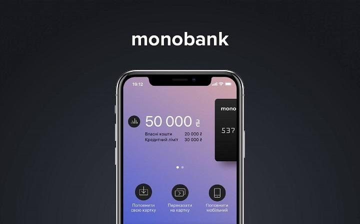

Клієнти Monobank зможуть приховати баланс карти від сторонніх очей: як це зробити
Користувачеві потрібно лише натиснути на суму балансу, і вона буде прихована від сторонніх
очей.

Раніше клієнтам Monobank був презентований
режим "Інкогніто" / фото monobank.com.ua
Клієнти Monobank, які не хочуть показувати
баланс своєї картки при відправці квитанцій третім особам, зможуть
приховати суму, що знаходиться на рахунку.
Про це в Telegram-каналі повідомив
співзасновник банку
Олег Гороховський.
Гороховський розповів клієнтам банку, як приховати баланс карти від сторонніх очей, не вдаючись до послуг
фотошопу.
Користувачеві потрібно лише натиснути на суму балансу, і вона буде прихована.
"Якщо серйозно, ця штука вже давненько працює..., як і режим "Інкогніто", який вмикається подвійним тапом на
баланс на головному екрані або довгим тапом на іконку при вході в додаток", – пише Гороховський.
Режим "Інкогніто":
Раніше клієнтам Monobank був презентований
режим "Інкогніто", який дає користувачам можливість при
використанні карти в громадському місці, приховати від сторонніх очей баланс і суму транзакції.
Monobank і пандемія:
У квітні 2020 року співзасновник першого в Україні банку без відділень Monobank Михайло Рогальський розповів
про те, як змінилися споживчі переваги українців після введення карантину.